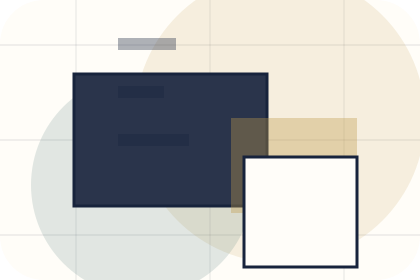
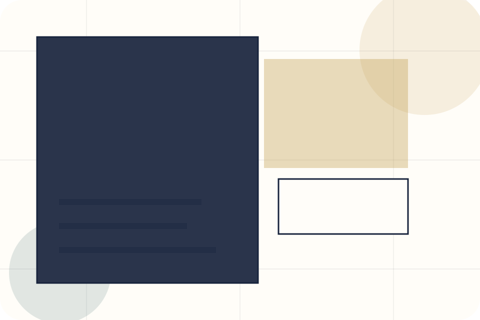
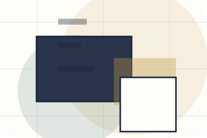
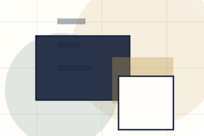
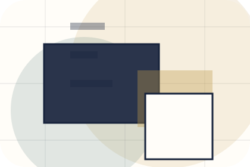
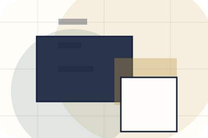
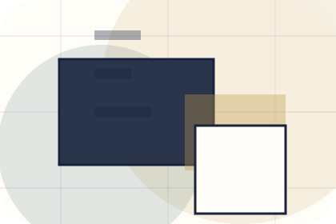
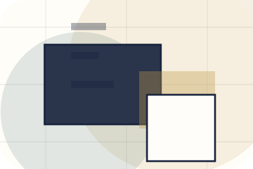
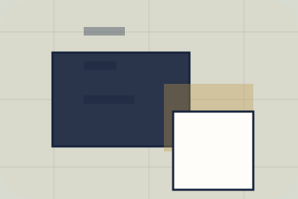

Context
Topics gives the page a specific angle instead of repeating the navigation label.
Speaking / 01
Speaking opens as a clear personal brands decision hub: what Brand offers, who it helps, why it matters, and which route to take first.
The first screen combines positioning, proof, primary action, and fast internal navigation, so people can act immediately or compare the rest of the speaking route with context.
Editorial author hero
Select the closest route and Brand keeps the next step, proof, and follow-up expectation aligned with authority and booking confidence.

Speaking / 02
Topics adds editorial context to the speaking route, using the author essay and media system structure to support authority and booking confidence before visitors choose a next step.
Brand uses essay media cards and focused copy to make the decision easier to scan, aligning the section with authority and booking confidence rather than filling space.
Explore Speaking
Topics gives the page a specific angle instead of repeating the navigation label.

The essay media cards show what to compare, what to avoid, and what matters most for personal brands, creators & public figures visitors.

The final cue points to a useful internal route so the section keeps the journey moving.
Speaking / 03
Keynotes adds editorial context to the speaking route, using the author essay and media system structure to support authority and booking confidence before visitors choose a next step.
Brand uses essay media cards and focused copy to make the decision easier to scan, aligning the section with authority and booking confidence rather than filling space.
Explore SpeakingKeynotes gives the page a specific angle instead of repeating the navigation label.
The essay media cards show what to compare, what to avoid, and what matters most for personal brands, creators & public figures visitors.
The final cue points to a useful internal route so the section keeps the journey moving.
Speaking / 04
Panels adds editorial context to the speaking route, using the author essay and media system structure to support authority and booking confidence before visitors choose a next step.
Brand uses essay media cards and focused copy to make the decision easier to scan, aligning the section with authority and booking confidence rather than filling space.
Explore SpeakingPanels gives the page a specific angle instead of repeating the navigation label.
The essay media cards show what to compare, what to avoid, and what matters most for personal brands, creators & public figures visitors.
The final cue points to a useful internal route so the section keeps the journey moving.
Speaking / 05
Workshops adds editorial context to the speaking route, using the author essay and media system structure to support authority and booking confidence before visitors choose a next step.
Brand uses essay media cards and focused copy to make the decision easier to scan, aligning the section with authority and booking confidence rather than filling space.
Explore SpeakingBrand structures workshops around context, judgment, and a clear next route so visitors can compare the block quickly before they book an appearance.
Book AppearanceSpeaking / 06
Audiences adds editorial context to the speaking route, using the author essay and media system structure to support authority and booking confidence before visitors choose a next step.
Brand uses essay media cards and focused copy to make the decision easier to scan, aligning the section with authority and booking confidence rather than filling space.
Explore Speaking

Audiences gives the page a specific angle instead of repeating the navigation label.
Speaking / 07
Reviews converts customer proof into a useful buying signal: the problem, the experience, and what changed afterward.
Proof stays believable by focusing on situation, service experience, and practical change rather than vague praise or unsupported results.
Explore SpeakingWhat the visitor needed before choosing Brand, written with enough context to feel real.

How the service, product, or support felt during the process, not just that it was good.

What became easier to decide, complete, buy, book, or trust after the interaction.
Speaking / 08
Requirements adds editorial context to the speaking route, using the author essay and media system structure to support authority and booking confidence before visitors choose a next step.
Brand uses essay media cards and focused copy to make the decision easier to scan, aligning the section with authority and booking confidence rather than filling space.
Explore SpeakingRequirements gives the page a specific angle instead of repeating the navigation label.
The essay media cards show what to compare, what to avoid, and what matters most for personal brands, creators & public figures visitors.
The final cue points to a useful internal route so the section keeps the journey moving.
Speaking / 09
Booking makes the contact path concrete: what to send, how the response works, and what Brand needs before visitors book an appearance.
The section reduces contact friction by naming the channel, expected detail, privacy path, and response expectation instead of dropping visitors into a generic form.
Book AppearanceBrand keeps booking practical: send the key details, choose the right contact route, and know what kind of reply to expect.
Book AppearanceEditorial author hero
Select the closest route and Brand keeps the next step, proof, and follow-up expectation aligned with authority and booking confidence.
Speaking / 10
Brand closes the speaking route with a clear action, a quick reminder of the value, and a low-friction way to book an appearance.
Visitors who are ready can use the primary action. Visitors who are still comparing can scan the section links, proof, and support routes before they book an appearance.
Book AppearanceThe final block keeps the choice simple: act now, compare one more proof route, or send enough detail for a focused response.
Book Appearanceauthority and booking confidence
A personal brand site with editorial essay rhythm, speaking/media cards, newsletter conversion, and booking clarity. Speaking ends with a direct path to book an appearance, plus enough context for visitors who still need to compare.

Book AppearanceInformation is provided for planning and should be reviewed for the final client, location, and operating rules.